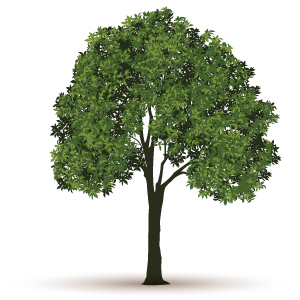
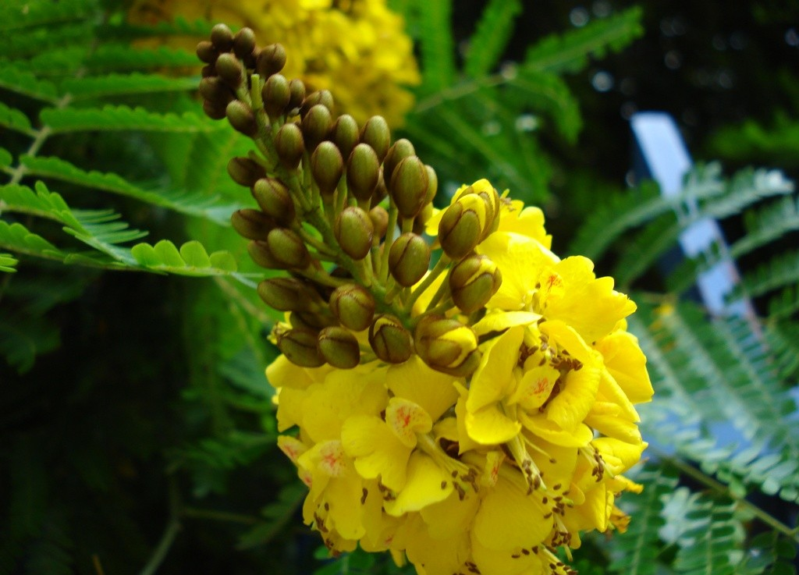
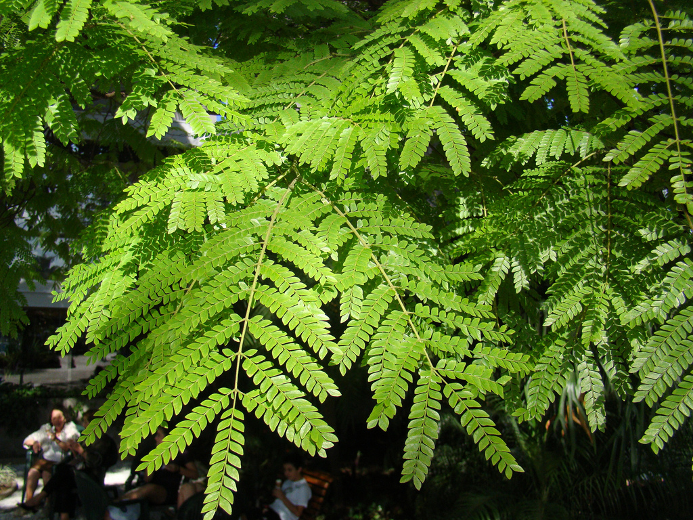

Sibipiruna
A sibipiruna é uma árvore de grande porte, muito frequente nos arredores urbanos de muitas cidades em função de seu rápido crescimento, floração amarela exuberante e copa avantajada que permite uma boa sombra.

A sibipiruna é uma árvore de grande porte, muito frequente nos arredores urbanos de muitas cidades em função de seu rápido crescimento, floração amarela exuberante e copa avantajada que permite uma boa sombra.



A floração das sibipirunas ocorre na primavera e no inverno. Suas flores amarelas guardam alguma semelhança com os ipês.

Já as folhas podem ser confundidas com pau brasil. A diferenciação costuma ser feita pela floração. As flores da sibipiruna são inteiramente amarelas, e as do pau brasil apresentam pontos avermelhados.